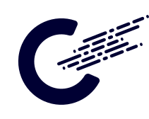
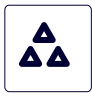

Who we are
Women’s Business Alliance
BRICS Women’s Business Alliance is a global platform for promoting BRICS women’s business both among the five states and beyond
Declaration on the Establishment of the BRICS Women's Business Alliance
On November 17, 2020, the Declaration on the Establishment of the Alliance was approved by the five Leaders during the XII BRICS Summit.

Our aims
Our history
2017
NOVOSIBIRSK - JULY 3
The idea of creating Women’s Business Alliance was proposed at the First International SCO and BRICS Women’s Forum in the summer of 2017
SHANGHAI - SEPTEMBER 4
Russian initiative to create WBA was supported by China at the BRICS Business Council Meeting, also it was mentioned by Russian President Vladimir Putin in his article in anticipation of the BRICS summit
2018
JOHANNESBURG - JULY 27
The initiative to create the Alliance was included in the 10th BRICS Summit Johannesburg Declaration
ST. PETERSBURG - SEPTEMBER 21
Russian initiative to create WBA was supported by China at the BRICS Business Council Meeting, also it was mentioned by Russian President Vladimir Putin in his article in anticipation of the BRICS summit
2019
BRASILIA - NOVEMBER 14
In the BRICS Summit Brasilia Declaration the leaders welcomed the establishment of the BRICS Women’s Business Alliance
2020
ONLINE - JULY 20
The Inaugural Meeting of the BRICS Women’s Business Alliance Bilateral Online Consultation Series with the leaders of the National Chapters of the Alliance
ONLINE - OCTOBER 26
BRICS Business Forum Panel discussion on women’s entrepreneurship with the participation of members of the Women’s Business Alliance
MOSCOW - OCTOBER 27
Press conference with the participation of the Russian Chapter of the BRICS Women’s Business Alliance
ONLINE - NOVEMBER 2
Establishment Meeting of the BRICS Women’s Business Alliance Agreement on the text of the Establishment Declaration and future areas of cooperation
ONLINE - NOVEMBER 17
XII BRICS Summit Approval of the Declaration on the Establishment of the Alliance
Our structure
National Chapters
Every national chapter of the Alliance includes five representatives per each BRICS country (25 members in total), who have founded their own businesses or are CEOs of large enterprises
Working Groups
Women in leadership positions in large companies

Representatives of women's business associations
Women entrepreneurs with successful experience
National Secretariats
Each Alliance National Chapter appoints a Contact point or Secretariat responsible for information sharing and communication matters